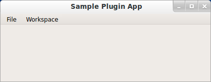

Sample Workbench Example¶
#------------------------------------------------------------------------------
# Copyright (c) 2013, Nucleic Development Team.
#
# Distributed under the terms of the Modified BSD License.
#
# The full license is in the file COPYING.txt, distributed with this software.
#------------------------------------------------------------------------------
""" A simple example plugin application.
This example serves to demonstrate the concepts described the accompanying
developer crash source document.
"""
from enaml.workbench.ui.api import UIWorkbench
if __name__ == '__main__':
import enaml
with enaml.imports():
from sample_plugin import SampleManifest
workbench = UIWorkbench()
workbench.register(SampleManifest())
workbench.run()
download here)
The resulting GUI looks like this (on Ubuntu):
There are three workbenches available in the dropdown menu, which are loaded just prior to display.